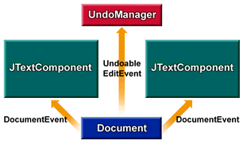
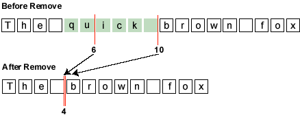

|
JavaTM 2 Platform Standard Ed. 5.0 |
|||||||||
| PREV CLASS NEXT CLASS | FRAMES NO FRAMES | |||||||||
| SUMMARY: NESTED | FIELD | CONSTR | METHOD | DETAIL: FIELD | CONSTR | METHOD | |||||||||
public interface Document
The Document is a container for text that serves
as the model for swing text components. The goal for this
interface is to scale from very simple needs (a plain text textfield)
to complex needs (an HTML or XML document, for example).
Content
At the simplest level, text can be modeled as a linear sequence of characters. To support internationalization, the Swing text model uses unicode characters. The sequence of characters displayed in a text component is generally referred to as the component's content.
To refer to locations within the sequence, the coordinates used are the location between two characters. As the diagram below shows, a location in a text document can be referred to as a position, or an offset. This position is zero-based.
In the example, if the content of a document is the sequence "The quick brown fox," as shown in the preceding diagram, the location just before the word "The" is 0, and the location after the word "The" and before the whitespace that follows it is 3. The entire sequence of characters in the sequence "The" is called a range.
The following methods give access to the character data that makes up the content.
Structure
Text is rarely represented simply as featureless content. Rather, text typically has some sort of structure associated with it. Exactly what structure is modeled is up to a particular Document implementation. It might be as simple as no structure (i.e. a simple text field), or it might be something like diagram below.

The unit of structure (i.e. a node of the tree) is referred to by the Element interface. Each Element can be tagged with a set of attributes. These attributes (name/value pairs) are defined by the AttributeSet interface.
The following methods give access to the document structure.
Mutations
All documents need to be able to add and remove simple text. Typically, text is inserted and removed via gestures from a keyboard or a mouse. What effect the insertion or removal has upon the document structure is entirely up to the implementation of the document.
The following methods are related to mutation of the document content:
Notification
Mutations to the Document must be communicated to
interested observers. The notification of change follows the event model
guidelines that are specified for JavaBeans. In the JavaBeans
event model, once an event notification is dispatched, all listeners
must be notified before any further mutations occur to the source
of the event. Further, order of delivery is not guaranteed.
Notification is provided as two separate events,
DocumentEvent, and
UndoableEditEvent.
If a mutation is made to a Document through its api,
a DocumentEvent will be sent to all of the registered
DocumentListeners. If the Document
implementation supports undo/redo capabilities, an
UndoableEditEvent will be sent
to all of the registered UndoableEditListeners.
If an undoable edit is undone, a DocumentEvent should be
fired from the Document to indicate it has changed again.
In this case however, there should be no UndoableEditEvent
generated since that edit is actually the source of the change
rather than a mutation to the Document made through its
api.

Referring to the above diagram, suppose that the component shown on the left mutates the document object represented by the blue rectangle. The document responds by dispatching a DocumentEvent to both component views and sends an UndoableEditEvent to the listening logic, which maintains a history buffer.
Now suppose that the component shown on the right mutates the same document. Again, the document dispatches a DocumentEvent to both component views and sends an UndoableEditEvent to the listening logic that is maintaining the history buffer.
If the history buffer is then rolled back (i.e. the last UndoableEdit undone), a DocumentEvent is sent to both views, causing both of them to reflect the undone mutation to the document (that is, the removal of the right component's mutation). If the history buffer again rolls back another change, another DocumentEvent is sent to both views, causing them to reflect the undone mutation to the document -- that is, the removal of the left component's mutation.
The methods related to observing mutations to the document are:
Properties
Document implementations will generally have some set of properties
associated with them at runtime. Two well known properties are the
StreamDescriptionProperty,
which can be used to describe where the Document came from,
and the TitleProperty, which can be used to
name the Document. The methods related to the properties are:
For more information on the Document class, see
The Swing Connection
and most particularly the article,
The Element Interface.
DocumentEvent,
DocumentListener,
UndoableEditEvent,
UndoableEditListener,
Element,
Position,
AttributeSet| Field Summary | |
|---|---|
static String |
StreamDescriptionProperty
The property name for the description of the stream used to initialize the document. |
static String |
TitleProperty
The property name for the title of the document, if there is one. |
| Method Summary | |
|---|---|
void |
addDocumentListener(DocumentListener listener)
Registers the given observer to begin receiving notifications when changes are made to the document. |
void |
addUndoableEditListener(UndoableEditListener listener)
Registers the given observer to begin receiving notifications when undoable edits are made to the document. |
Position |
createPosition(int offs)
This method allows an application to mark a place in a sequence of character content. |
Element |
getDefaultRootElement()
Returns the root element that views should be based upon, unless some other mechanism for assigning views to element structures is provided. |
Position |
getEndPosition()
Returns a position that represents the end of the document. |
int |
getLength()
Returns number of characters of content currently in the document. |
Object |
getProperty(Object key)
Gets the properties associated with the document. |
Element[] |
getRootElements()
Returns all of the root elements that are defined. |
Position |
getStartPosition()
Returns a position that represents the start of the document. |
String |
getText(int offset,
int length)
Fetches the text contained within the given portion of the document. |
void |
getText(int offset,
int length,
Segment txt)
Fetches the text contained within the given portion of the document. |
void |
insertString(int offset,
String str,
AttributeSet a)
Inserts a string of content. |
void |
putProperty(Object key,
Object value)
Associates a property with the document. |
void |
remove(int offs,
int len)
Removes a portion of the content of the document. |
void |
removeDocumentListener(DocumentListener listener)
Unregisters the given observer from the notification list so it will no longer receive change updates. |
void |
removeUndoableEditListener(UndoableEditListener listener)
Unregisters the given observer from the notification list so it will no longer receive updates. |
void |
render(Runnable r)
Allows the model to be safely rendered in the presence of concurrency, if the model supports being updated asynchronously. |
| Field Detail |
|---|
static final String StreamDescriptionProperty
static final String TitleProperty
| Method Detail |
|---|
int getLength()
void addDocumentListener(DocumentListener listener)
listener - the observer to registerremoveDocumentListener(javax.swing.event.DocumentListener)void removeDocumentListener(DocumentListener listener)
listener - the observer to registeraddDocumentListener(javax.swing.event.DocumentListener)void addUndoableEditListener(UndoableEditListener listener)
listener - the observer to registerUndoableEditEventvoid removeUndoableEditListener(UndoableEditListener listener)
listener - the observer to registerUndoableEditEventObject getProperty(Object key)
key - a non-null property key
putProperty(Object, Object)
void putProperty(Object key,
Object value)
StreamDescriptionProperty and
TitleProperty.
Other properties, such as author, may also be defined.
key - the non-null property keyvalue - the property valuegetProperty(Object)
void remove(int offs,
int len)
throws BadLocationException
To ensure reasonable behavior in the face
of concurrency, the event is dispatched after the
mutation has occurred. This means that by the time a
notification of removal is dispatched, the document
has already been updated and any marks created by
createPosition have already changed.
For a removal, the end of the removal range is collapsed
down to the start of the range, and any marks in the removal
range are collapsed down to the start of the range.

If the Document structure changed as result of the removal, the details of what Elements were inserted and removed in response to the change will also be contained in the generated DocumentEvent. It is up to the implementation of a Document to decide how the structure should change in response to a remove.
If the Document supports undo/redo, an UndoableEditEvent will also be generated.
offs - the offset from the beginning >= 0len - the number of characters to remove >= 0
BadLocationException - some portion of the removal range
was not a valid part of the document. The location in the exception
is the first bad position encountered.DocumentEvent,
DocumentListener,
UndoableEditEvent,
UndoableEditListener
void insertString(int offset,
String str,
AttributeSet a)
throws BadLocationException

If the Document structure changed as result of the insertion, the details of what Elements were inserted and removed in response to the change will also be contained in the generated DocumentEvent. It is up to the implementation of a Document to decide how the structure should change in response to an insertion.
If the Document supports undo/redo, an UndoableEditEvent will also be generated.
offset - the offset into the document to insert the content >= 0.
All positions that track change at or after the given location
will move.str - the string to inserta - the attributes to associate with the inserted
content. This may be null if there are no attributes.
BadLocationException - the given insert position is not a valid
position within the documentDocumentEvent,
DocumentListener,
UndoableEditEvent,
UndoableEditListener
String getText(int offset,
int length)
throws BadLocationException
offset - the offset into the document representing the desired
start of the text >= 0length - the length of the desired string >= 0
BadLocationException - some portion of the given range
was not a valid part of the document. The location in the exception
is the first bad position encountered.
void getText(int offset,
int length,
Segment txt)
throws BadLocationException
If the partialReturn property on the txt parameter is false, the data returned in the Segment will be the entire length requested and may or may not be a copy depending upon how the data was stored. If the partialReturn property is true, only the amount of text that can be returned without creating a copy is returned. Using partial returns will give better performance for situations where large parts of the document are being scanned. The following is an example of using the partial return to access the entire document:
int nleft = doc.getDocumentLength();
Segment text = new Segment();
int offs = 0;
text.setPartialReturn(true);
while (nleft > 0) {
doc.getText(offs, nleft, text);
// do someting with text
nleft -= text.count;
offs += text.count;
}
offset - the offset into the document representing the desired
start of the text >= 0length - the length of the desired string >= 0txt - the Segment object to return the text in
BadLocationException - Some portion of the given range
was not a valid part of the document. The location in the exception
is the first bad position encountered.Position getStartPosition()
Position getEndPosition()
Position createPosition(int offs)
throws BadLocationException
offs - the offset from the start of the document >= 0
BadLocationException - if the given position does not
represent a valid location in the associated documentElement[] getRootElements()
Typically there will be only one document structure, but the interface supports building an arbitrary number of structural projections over the text data. The document can have multiple root elements to support multiple document structures. Some examples might be:
Element getDefaultRootElement()
void render(Runnable r)
r - a Runnable used to render the model
|
JavaTM 2 Platform Standard Ed. 5.0 |
|||||||||
| PREV CLASS NEXT CLASS | FRAMES NO FRAMES | |||||||||
| SUMMARY: NESTED | FIELD | CONSTR | METHOD | DETAIL: FIELD | CONSTR | METHOD | |||||||||
Copyright © 2004, 2010 Oracle and/or its affiliates. All rights reserved. Use is subject to license terms. Also see the documentation redistribution policy.